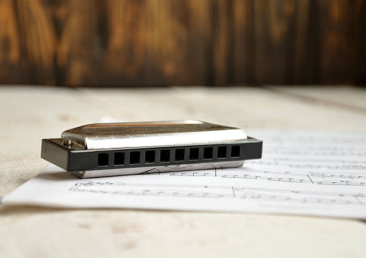

A gaita de boca é um instrumento muito diversificado com varios modelos e notas, mesmo assim é um instrumento relativamenta facil de usar, dependendo do modelo
A gaita pode não ser tão complexa quanto os outros instrumentos, mas é um instrumento incrivel, como prova disso o blues
A gaita, também chamada de harmônica ou gaita de boca, é um instrumento com as mesmas características de qualquer outro, pois permite tocar notas musicais, acordes, etc...

Já me deparei com diversos alunos falando que queriam aprender a tocar gaita, motivados e ansiosos para tocar como Bob Dylan, Alanis Morissette, Bono Vox, Humberto Gessinger, entre outros.
Mas a arte de tocar gaita não se resume a soprar ou aspirar de qualquer maneira, como os “gaitistas” mencionados acima. Existem técnicas, embocadura e muitos outros detalhes a serem aprendidos.